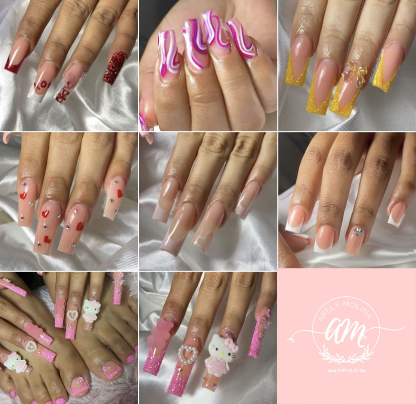

NOSOTROS

HISTORIA
Nails by Molina se fundo el dia 26 de enero del año 2022 en Tijuana Baja california,fue fundado por Arely Molina, la cual empezo siendo manicurista
desde su casa, siendo su propia jefa.
MISION
Nails by Molina, tiene como mision brindar un buen servicio de manicure a sus clientas, y se sientan seguras y comodas al realizar sus trabajos.
VISION
Su vision es poder a llegar a ser una empresa reconocida, y poder abrir mas sucursales por toda la ciudad.

© 2023. Derechos reservados.
Desarrollado por: Martinez Alvarado Brenda Karina
Matricula: 02011901 Grupo: 605
COBACH NUEVA TIJUANA